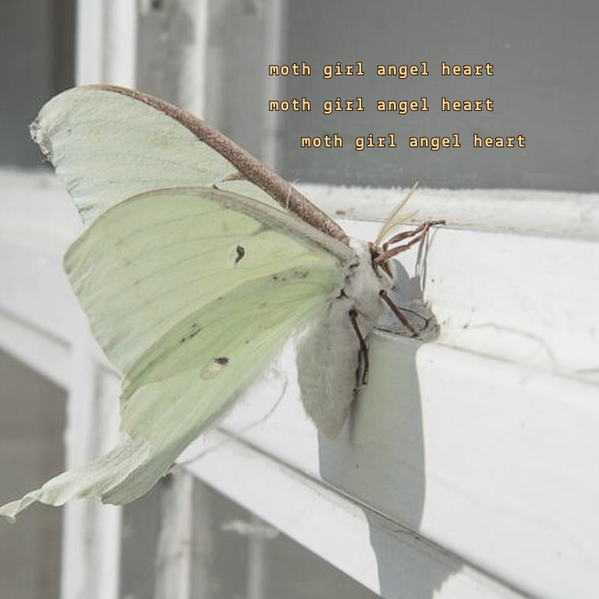

mothgirl
mothgirl 
this page is dedicated to moths.
I love moths because they are muted and mysterious. they are known for following after the light, which is very poetic and beautiful to me.

there are many different kinds of moths. one of my favorites are the lunar moths. the lifespan of a moth is only 10 days. lunar moths do not have any mouths.
another beautiful type of moth is a white satin moth. these ones look like little angels! I have seen them many times before and used to think they are butterflies. you can tell the difference between a moth and a butterfly because a moth has a thicker, more furry body. they also are more active at night, while butterflies are more active in the day time.
I like to think of moths as a butterfly's pale, muted, eerie cousin.